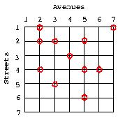

Grid city is a city carefully planned. Its street-map very much resembles that of downtown Manhattan in New York. Streets and avenues are orderly setup like a grid.
A group of friends living in Grid city decide to meet for lunch. Given that the group is dynamic, that is, its size may grow or shrink from time to time, they follow a written rule to determine the meeting point. It states that the meeting point is the one that minimizes the total distance the all group has to walk from their homes upto that point. If there is more than one candidate point, the rule imposes that the meeting point is the one corresponding to the smaller number for street and avenue. For large groups, this rule naturally avoids the usual long discussions that take place before aggreeing on a possible meeting point. For simplicity, consider that each person lives at a corner formed by a street and an avenue. You can also assume that the distance between two corners along one street or avenue is always one unit.
Your task is to suggest to the group their best meeting point (corner between a street and an avenue).
As an example, the following figure illustrates one such Crid city and the location of 11 friends. For this scenario, the best meeting point is street 3 and avenue 4. You can assume that streets and avenues are set and ordered as illustrated in this figure.

Please note that if we add another friend located at, say street 3 and avenue 5, making a total of 12 friends, then we would have two candidate meeting points, pairs (3,4) and (3,5). The rule clearly defines that street 3 and avenue 4 is the meeting point.
Given the size of a grid representing the Grid city and the locations of each person of the group of friends, your task is to determine the best meeting point following the rule of the group, as stated above.
The first line of the input contains the number T of test cases, followed by T input blocks.
The first line of each test case consists of three positive numbers, the number of streets S, the number of avenues A (where S <=> and A <=>), and the number of friends F (where 0 < f=""><=>). The following F input lines indicate the locations of the friends. A location is defined by two numbers, a street and an avenue, in this order.
The output for each test case must list the best meeting point formatted as follows: (Street: 3, Avenue: 4).
Each test case must be on a separate line.
2 2 2 2 1 1 2 2 7 7 11 1 2 1 7 2 2 2 3 2 5 3 4 4 2 4 5 4 6 5 3 6 5
(Street: 1, Avenue: 1) (Street: 3, Avenue: 4)